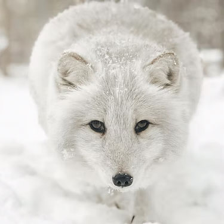
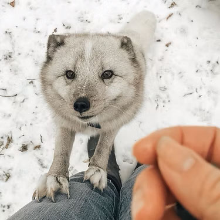
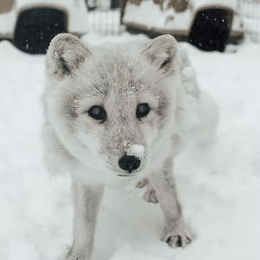
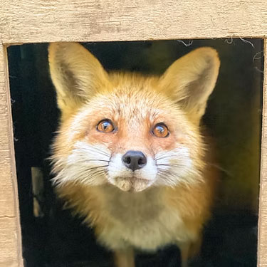
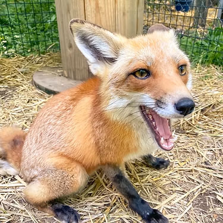
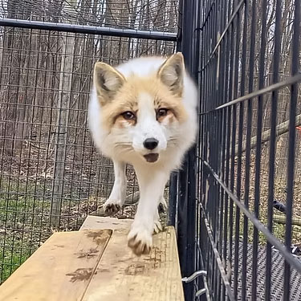
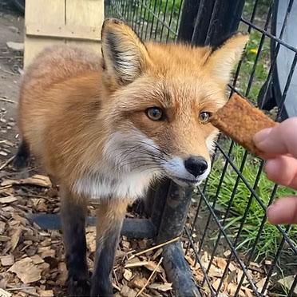
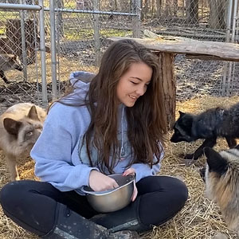

Toto
The first fox ever rescued by Kim,
and the catalyst of AFD!

Lulu
Surrendered to AFD after a family
realized they could not care for a fox.

Archie
A blind fox that found his way
to our rescue after being passed around.

Kaya
She was originally meant to be
released, but was deemed non-releasable.

Porscha
Foxes were illegal pets in her home state,
so she was surrendered to us.

Loki
His previous owners could not obtain
a new licence for fox ownership.

Mori
A former exhibit animal from a zoo
that found zoo life too stressful.

March 2020 Foxes
Nuit, Cedar, Ruby, and Judy: Four out
of thirty foxes confiscated from a fur farm.